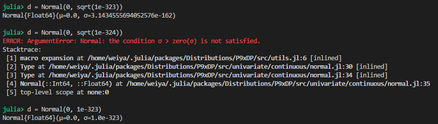
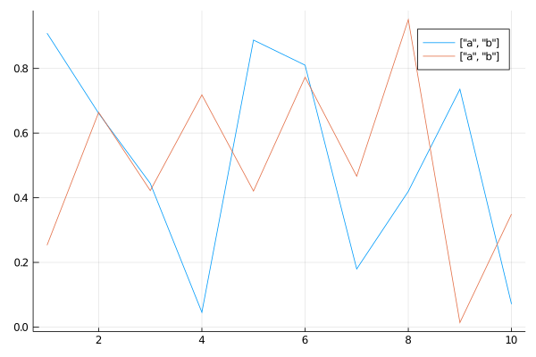

julia相关¶
- 主页
- My New Workflow with Julia 1.0, mainly focus on how to develop a Julia package.
- Timing in Julia
- Publication quality plots in Julia
Is there a way to undo using in Julia?¶
NO
- https://stackoverflow.com/questions/33927523/can-i-make-julia-forget-a-method-from-the-repl
- https://stackoverflow.com/questions/36249313/is-there-a-way-to-undo-using-in-julia
Although we cannot remove some defined function, with the powerful Revise.jl, we can update the functions without reloading the scripts.
关于 mean()¶
using Statistics后才能用mean()，而using Distributions后也能用mean()。前者表示generic function with 5 methods，后者称generic function with 78 methods.
Normal 中标准差为 0 的问题¶

可知，最低可以支持 1e-323，所以似乎也支持 sqrt(1e-646)，但并没有，而且当 sqrt(1e-324) 时精度就不够了，似乎 sqrt(x) 的精度与 x 的精度相当。
连等号赋值¶
如果采用 a=b=c=ones(10) 形式赋值的话，则如果后面改变 a 的值，b 和 c 的值也将随之改变。
但如果 a=b=c=1 为常值的话，则三个变量的值还是独立的。
@distributed¶
如果配合 sharedarrays 使用时，需要加上 @sync, 参考@fetch
ERROR: expected Type{T}¶
参考 ERROR: LoadError: TypeError: Type{…} expression: expected Type{T}, got Module
其中举了一个小例子
module Foo end
Foo{Int64}
会爆出这样的错误。但是一开始竟然没有仔细类比，最后在 REPL 中逐行试验才发现是，using SharedArrays 后直接用 SharedArrays{Float64}(10)，这与上面 Foo 的错误形式完全一样，竟然没有仔细类比。哎，看来以后多思考一下错误可能的原因，不要一味蛮力试验。
type, instance, and object¶
看两个句子：
- A type union is a special abstract type which includes as objects all instances of any of its argument types
Nothingis the singleton type whose only instance is the objectnothing.
从中分析知道，instance 相对于 types，而 object 相对 instance。一个 type 可能有多个 instance，每个 instance 称之为 object。
- instance of some types
- object of some instances
Couldn’t find libpython error¶
ENV["PYTHON"]=""; Pkg.build("PyCall")
to install its own private Miniconda distribution for you, in a way that won’t interfere with your other Python installations.
Refer to Couldn’t find libpython error #199
Actually, using PyPlot also encounters the similar question, cannot find matplotlib, then I changed to the conda environment contained such package, and then
ENV["PYTHON"]="the-python-path";
# change to package command line
build PyCall
it works. And it seems that it does NOT depend on conda environment any more, i.e., PyPlot still works for different conda environment, even without matplotlib package in such environment.
In the words of the official documentation,
If you use Python virtualenvs, then be aware that PyCall uses the virtualenv it was built with by default, even if you switch virtualenvs. If you want to switch PyCall to use a different virtualenv, then you should switch virtualenvs and run rm(Pkg.dir(“PyCall”,”deps”,”PYTHON”)); Pkg.build(“PyCall”).
which supports my above guess.
Record for install PyCall¶
Switch to py37 conda environment, then run julia1.2.0
(v1.2) pkg> add PyCall
Then test to import module in the same REPL,
julia> using PyCall
[ Info: Recompiling stale cache file /home/weiya/.julia/compiled/v1.2/PyCall/GkzkC.ji for PyCall [438e738f-606a-5dbb-bf0a-cddfbfd45ab0]
julia> math = pyimport("math")
PyObject <module 'math' from '/home/weiya/anaconda3/lib/python3.7/lib-dynload/math.cpython-37m-x86_64-linux-gnu.so'>
Now open a new julia session under different conda environment (or no any conda environment), re-run the above code
julia> using PyCall
julia> math = pyimport("math")
PyObject <module 'math' from '/home/weiya/anaconda3/lib/python3.7/lib-dynload/math.cpython-37m-x86_64-linux-gnu.so'>
As you can see, no any compiling info when using PyCall, and return the same math module. However such module does not corresponds to the py37 conda environment. The official documentation says
On GNU/Linux systems, PyCall will default to using the python3 program (if any, otherwise
python) in your PATH.
Then to specify the version of python such as
julia> ENV["PYTHON"] = Sys.which("python")
"/home/weiya/anaconda3/envs/py37/bin/python3.7"
and rebuild, note that need to restart the julia session to recompiling,
julia> using PyCall
[ Info: Recompiling stale cache file /home/weiya/.julia/compiled/v1.2/PyCall/GkzkC.ji for PyCall [438e738f-606a-5dbb-bf0a-cddfbfd45ab0]
julia> pyimport("math")
PyObject <module 'math' from '/home/weiya/anaconda3/envs/py37/lib/python3.7/lib-dynload/math.cpython-37m-x86_64-linux-gnu.so'>
then the module corresponds to the specified conda environment, and then like the above test, it also can be used in other conda environment without recompiling.
parallel¶
references
- Julia parallel computing over multiple nodes in cluster
- Using julia -L startupfile.jl, rather than machinefiles for starting workers.
- Help setting up Julia on a cluster
pbsdsh (unsolved)¶
Submit a pbsdsh job and specify multiply nodes with multiply cores, say nodes=2:ppn=4
error log file (see full file in the cluster: dshmcmc.e21907):
fatal: error thrown and no exception handler available.
InitError(mod=:Base, error=ArgumentError(msg="Package Sockets not found in current path:
- Run `Pkg.add("Sockets")` to install the Sockets package.
"))
rec_backtrace at /buildworker/worker/package_linux64/build/src/stackwalk.c:94
record_backtrace at /buildworker/worker/package_linux64/build/src/task.c:246
jl_throw at /buildworker/worker/package_linux64/build/src/task.c:577
require at ./loading.jl:817
init_stdio at ./stream.jl:237
jfptr_init_stdio_4446.clone_1 at /opt/share/julia-1.0.0/lib/julia/sys.so (unknown line)
jl_apply_generic at /buildworker/worker/package_linux64/build/src/gf.c:2182
reinit_stdio at ./libuv.jl:121
__init__ at ./sysimg.jl:470
jl_apply_generic at /buildworker/worker/package_linux64/build/src/gf.c:2182
jl_apply at /buildworker/worker/package_linux64/build/src/julia.h:1536 [inlined]
jl_module_run_initializer at /buildworker/worker/package_linux64/build/src/toplevel.c:90
_julia_init at /buildworker/worker/package_linux64/build/src/init.c:811
julia_init__threading at /buildworker/worker/package_linux64/build/src/task.c:302
main at /buildworker/worker/package_linux64/build/ui/repl.c:227
__libc_start_main at /lib64/libc.so.6 (unknown line)
_start at /opt/share/julia-1.0.0/bin/julia (unknown line)
But when I just use single node, and arbitrary cores, say nodes=1:ppn=2, it works well.
references¶
julia local package 失败折腾记录¶
- no error after
add ~/GitHub/adm.jl, butusing admcannot work. refer to Adding a local package - set
startup.jlbut still not work. refer to How does Julia find a module? - one possible way: Finalizing Your Julia Package: Documentation, Testing, Coverage, and Publishing
julia for scope¶
The following code
i = 0
for j = 1:10
i = i + 1
end
ERROR: UndefVarError: i not defined
A (possible) reasonable explanation is, i is a global variable, we cannot modify a global variable in a local block without global keyword, but we can read i in the for loop.
Alternatively, we can use let block,
let
i = 0
for j = 1:10
i = i + 1
end
i
end
then i isn’t really a global variable anymore.
References:
convert a matrix into an array of array¶
mapslices(x->[x], randn(5,5), dims=2)[:]
refer to
Converting a matrix into an array of arrays
Conversely, we can converting the array of arrays to a matrix, refer to How to convert an array of array into a matrix?
index from 0¶
using OffsetArrays package, refer to
plot kernel density¶
refer to Kernel density estimation status
自定义 == and hash()¶
对于自定义的 mutable struct, 直接用 == 返回 false，因此需要自己定义等号，比如
Base.:(==)(x::Reaction, y::Reaction) = all([
x.substrate == y.substrate,
x.product == y.product,
x.reversible == y.reversible,
x.species == y.species])
而如果想用 unique 函数的话，其基于 isequal 函数，而 isequal 是通过判断 hash 值来判定的，所以仅仅定义了 == 仍不够，还需要定义 hash 函数，这很简单，比如
function Base.hash(obj::Reaction, h::UInt)
return hash((obj.substrate, obj.product, obj.reversible, obj.species), h)
end
hash（散列、杂凑）函数，是将任意长度的数据映射到有限长度的域上。直观解释起来，就是对一串数据m进行杂糅，输出另一段固定长度的数据h，作为这段数据的特征（指纹）。
or
HASH函数是这么一种函数，他接受一段数据作为输入，然后生成一串数据作为输出，从理论上说，设计良好的HASH函数，对于任何不同的输入数据，都应该以极高的概率生成不同的输出数据，因此可以作为“指纹”使用，来判断两个文件是否相同。 数据 ---->输入 HASH 函数 ---->输出指纹数据
参考
- Hash function for custom type
- 到底什么是hash?
- Surprising struct equality test
- What is the difference between “using” and “import”?
& 优先级¶
use
(x[1] <= width) & (x[1] >= 0) & (x[2] <= height) & (x[2] >=0)
instead of
x[1] <= width & x[1] >= 0 & x[2] <= height & x[2] >=0
MethodError: objects of type Module are not callable¶
check if the function is mistaken by the module name, such as AxisArray vs. AxisArrays.
/lib/x86_64-linux-gnu/libz.so.1: versionZLIB_1.2.9’ not found`¶
work with GPU¶
- An Introduction to GPU Programming in Julia
- Re-build after install cudnn, refer to GPU on cluster: conversion to pointer not defined for CuArray{Float32,2}
load ImageView on Server¶
when using ImageView, it throws an error,
ERROR: LoadError: InitError: Cannot open display:
fixed by ssh -X. If further ssh on the node, it still works.
-i vs -L¶
if need to REPL and also arguments, then -i would be suitable.
And note that -- should be separated the switches and program files. (but seems not necessary)
Unable to display plot using the REPL. GKS errors¶
The reason would be relate to the GR package,
cd .julia/packages/GR/ZI5OE/deps/gr/bin/
ldd gksqt
and then get
linux-vdso.so.1 => (0x00007ffdc1e58000)
libQt5Widgets.so.5 => not found
libQt5Gui.so.5 => not found
libQt5Network.so.5 => not found
libQt5Core.so.5 => not found
libGL.so.1 => /lib64/libGL.so.1 (0x00002ae608a73000)
libpthread.so.0 => /lib64/libpthread.so.0 (0x00002ae608ce5000)
libstdc++.so.6 => /lib64/libstdc++.so.6 (0x00002ae608f01000)
libm.so.6 => /lib64/libm.so.6 (0x00002ae609209000)
libgcc_s.so.1 => /lib64/libgcc_s.so.1 (0x00002ae60950b000)
libc.so.6 => /lib64/libc.so.6 (0x00002ae609721000)
libexpat.so.1 => /lib64/libexpat.so.1 (0x00002ae609aef000)
libxcb-dri3.so.0 => /lib64/libxcb-dri3.so.0 (0x00002ae609d19000)
libxcb-xfixes.so.0 => /lib64/libxcb-xfixes.so.0 (0x00002ae609f1c000)
libxcb-present.so.0 => /lib64/libxcb-present.so.0 (0x00002ae60a125000)
libxcb-sync.so.1 => /lib64/libxcb-sync.so.1 (0x00002ae60a328000)
libxshmfence.so.1 => /lib64/libxshmfence.so.1 (0x00002ae60a52f000)
libglapi.so.0 => /lib64/libglapi.so.0 (0x00002ae60a733000)
libselinux.so.1 => /lib64/libselinux.so.1 (0x00002ae60a963000)
libXext.so.6 => /lib64/libXext.so.6 (0x00002ae60ab8a000)
libXdamage.so.1 => /lib64/libXdamage.so.1 (0x00002ae60ad9d000)
libXfixes.so.3 => /lib64/libXfixes.so.3 (0x00002ae60afa0000)
libX11-xcb.so.1 => /lib64/libX11-xcb.so.1 (0x00002ae60b1a6000)
libX11.so.6 => /lib64/libX11.so.6 (0x00002ae60b3a9000)
libxcb.so.1 => /lib64/libxcb.so.1 (0x00002ae60b6e7000)
libxcb-glx.so.0 => /lib64/libxcb-glx.so.0 (0x00002ae60b90f000)
libxcb-dri2.so.0 => /lib64/libxcb-dri2.so.0 (0x00002ae60bb2b000)
libXxf86vm.so.1 => /lib64/libXxf86vm.so.1 (0x00002ae60bd30000)
libdrm.so.2 => /lib64/libdrm.so.2 (0x00002ae60bf36000)
libdl.so.2 => /lib64/libdl.so.2 (0x00002ae60c148000)
/lib64/ld-linux-x86-64.so.2 (0x0000557abc358000)
libXau.so.6 => /lib64/libXau.so.6 (0x00002ae60c34c000)
libpcre.so.1 => /lib64/libpcre.so.1 (0x00002ae60c551000)
(refer to one comment in Error: GKS: can’t connect to GKS socket application)
So it seems that it is due to the missing of libqt5. If I have the sudo privilege, maybe just type
sudo apt-get install qt5-default
but I cannot. But I noticed that I have installed miniconda3, and the qt is installed,
qmake -v
# QMake version 3.1
# Using Qt version 5.9.7 in /users/xxx/miniconda3/lib
So a natural way is to append the library path of qt to LD_LIBRARY_PATH, that is,
# in .bashrc
export LD_LIBRARY_PATH=/users/xxx/miniconda3/lib:$LD_LIBRARY_PATH
then rebuild GR package in the julia REPL.
This solution should work, but actually it failed at the first time. Do not be too frustrated, I found the reason is that I type miniconda3 as minconda3 in the path.
It works now, although it still throw an error,
julia> libGL error: unable to load driver: swrast_dri.so
libGL error: failed to load driver: swrast
dims=1¶
总是记不太清 sum, mean 的时候 dims=1 是按行求和还是按列求和，经常先玩个 toy example 才能分辨出来。比如，
julia> a = rand(4, 3)
4×3 Array{Float64,2}:
0.279181 0.0903167 0.148329
0.486691 0.869156 0.0538834
0.110781 0.836284 0.486467
0.810343 0.208659 0.759561
julia> sum(a, dims=1)
1×3 Array{Float64,2}:
1.687 2.00442 1.44824
即把 dims 所代表的维度元素加起来，或者说沿着 dims 进行运算。这一点与 R 的函数 apply 中 margin 参数作用刚好相反，
> a = matrix(rnorm(12), 4, 3)
> a
[,1] [,2] [,3]
[1,] 1.1535199 0.03198768 0.2857126
[2,] -1.3616720 0.32325598 1.9242805
[3,] -0.6519595 -1.14800119 -0.3635221
[4,] 1.2713182 0.98515312 0.2269218
> apply(a, 1, sum)
[1] 1.4712202 0.8858644 -2.1634828 2.4833932
这样交叉记忆，不知道效果会不会好点。
reset kw... value¶
In the following situation, I want to reset a particular argument in kw....
function f(; kw...)
g(; kw...)
end
Note that the type of kw is Base.Iterators.Pairs, firstly I want to directly reset the value via
h(;kw...) = kw
h(a=1).data.a = 2
but it throws
ERROR: setfield! immutable struct of type NamedTuple cannot be changed
Stacktrace:
[1] setproperty!(::NamedTuple{(:a,),Tuple{Int64}}, ::Symbol, ::Int64) at ./Base.jl:21
[2] top-level scope at none:0
So I need to find new method, or give up such idea. Fortunately, the official documentation of Julia says
The nature of keyword arguments makes it possible to specify the same argument more than once. For example, in the call
plot(x, y; options..., width=2)it is possible that the options structure also contains a value forwidth.
Thus, I can write
function f(; kw...)
g(; kw..., b = 6)
end
b is the argument I want to reset.
some interesting behavior¶
d = Dict{Int, Int}()
d[1] = 1
if we access
d.vals
# d.keys
it will return a 16-element Array{Int64,1}, but if we use
values(d)
keys(d)
it correctly returns the exactly one elements, but with type Base.ValueIterator for a Dict{Int64,Int64} with 1 entry.
function in function¶
julia> function f2()
a = 10
function g()
a = a+10
end
g()
println(a)
end
f2 (generic function with 1 method)
julia> f2()
20
but
julia> function f2()
a = 10
g() = a + 10
g()
println(a)
end
f2 (generic function with 1 method)
julia> f2()
10
since the first one does not have return, but g() has return and the addition is not on a.
pass array into function¶
julia> a = [1,2]
2-element Array{Int64,1}:
1
2
julia> function f(a)
a = a .+ 1
end
f (generic function with 1 method)
julia> f(a)
2-element Array{Int64,1}:
2
3
julia> a
2-element Array{Int64,1}:
1
2
julia> function g(a)
a .= a .+ 1
end
g (generic function with 1 method)
julia> g(a)
2-element Array{Int64,1}:
2
3
julia> a
2-element Array{Int64,1}:
2
3
check whether array entry is undef¶
b = Array{Array{Int, 1}}(undef, 3)
isdefined(b, 1)
# or
isassigned(b, 1)
# not
# isdefined(b[1])
refer to Julia: check whether array entry is undef
memory allocation of undef¶
julia> @time Array{Array{Int, 1}, 2}(undef, 100, 100);
0.000024 seconds (6 allocations: 78.359 KiB)
julia> @time zeros(100,100, 1);
0.000014 seconds (6 allocations: 78.359 KiB)
julia> @time zeros(100,100, 10);
0.000077 seconds (6 allocations: 781.484 KiB)
单引号和双引号¶
julia> a = 'www'
ERROR: syntax: invalid character literal
julia> a = 'w'
'w': ASCII/Unicode U+0077 (category Ll: Letter, lowercase)
julia> a = "ww"
"ww"
refer to #105.
Juno 中 Cltr + Enter 的 bug¶
当我使用 Ctrl + Enter 运行下列语句时，
using Images, ImageView
img = load(download("https://juliaimages.org/latest/assets/segmentation/horse.jpg"));
imshow(img)
REPL 冻住了，一直停在
Dict{String,Any} with 4 entries:
而我如果直接将上述语句复制到 REPL 中运行时，一切 OK，正常显示为
Dict{String,Any} with 4 entries:
"gui" => Dict{String,Any}("window"=>GtkWindowLeaf(name="", parent, wi…
"roi" => Dict{String,Any}("redraw"=>50: "map(clim-mapped image, input…
"annotations" => 3: "input-2" = Dict{UInt64,Any}() Dict{UInt64,Any}
"clim" => 2: "CLim" = CLim{RGB{Float64}}(RGB{Float64}(0.0,0.0,0.0), RG…
找到类似的 Issue: [BUG] Evaluation in Editor freezes Atom occasionally
虽然其解决方案不太清楚，是有关 notification-daemon，但是维护者 @pfitzseb 的回复
OS level notifications are disabled completly in the latest Juno release because they were causing crashes on Mac and didn’t really seem to work on other platforms.
提醒我或许是因为 Juno 的版本问题，当前版本为 v0.7.2, 最新版本为 v0.8.1
仅仅更新 Juno.jl 的版本似乎还不行，另外将 Atom.jl 从 v0.12.8 更新到 v0.12.9
最后竟然真的解决了！
Juno 使用系统代理¶
当在 .bashrc 添加 http_proxy 和 https_proxy 中并 source 之后，直接在 shell 里面开的 julia session 中，验证当前 ip
run(`curl ifconfig.me`)
或者直接查看
ENV["http_proxy"]
发现可以使用系统代理。但是在 Atom 中开的 julia，则不行。找到 Atom 一条相关的 issue: [Atom 1.32.0] Does not inherit environment variables when launched not from the command line，但是我已经是最新版了，不应该存在这个问题。但是当我通过 Ctrl-Shift-i 打开 devtools，验证 process.env["http_proxy"]，显示 undefined；而且直接在 source 之后的 terminal 中打开，也显示 undefined。猜想，只对 PATH 有效？或者因为 Juno.jl?
跳过这个问题，最后直接在 startup.jl 文件中添加
ENV["http_proxy"] =
ENV["https_proxy"]
进行设置，这参考了 Install packages behind the proxy
wrong arrangement of multiple figures in a grid¶
Hi, I am confused by the arrangement of multiple figures in a grid. I begin with the example code in the README,
gui = imshow_gui((300, 300), (2, 1)) # 2 columns, 1 row of images (each initially 300×300)
canvases = gui["canvas"]
imshow(canvases[1,1], testimage("lighthouse"))
imshow(canvases[1,2], testimage("mandrill"))
Gtk.showall(gui["window"])
it throws an error when accessing canvases[1,2]
julia> imshow(canvases[1,2], testimage("mandrill"))
ERROR: BoundsError: attempt to access 2×1 Array{Any,2} at index [1, 2]
and I check the size of canvases is
julia> size(canvases)
(2, 1)
it seems that the canvases will arrage by column while the gui declares it should be by rows.
On the other hand, if I run
gui = imshow_gui((300, 300), (2, 1)) # 2 columns, 1 row of images (each initially 300×300)
canvases = gui["canvas"]
imshow(canvases[1,1], testimage("lighthouse"))
imshow(canvases[2,1], testimage("mandrill"))
Gtk.showall(gui["window"])
gui = imshow_gui((300, 300), (1, 2)) # 2 columns, 1 row of images (each initially 300×300)
canvases = gui["canvas"]
imshow(canvases[1,1], testimage("lighthouse"))
imshow(canvases[1,2], testimage("mandrill"))
Gtk.showall(gui["window"])
Then I guess it might due to the version of some packages…
Manage Different Versions of Julia¶
- download the “Generic Linux Binaries for x86 (64-bit)” of a particular version from Download Julia
- put it into customed folder, such as
srcunder home directory, - link it to the system path, such as
cd /usr/local/bin
sudo ln -s /home/weiya/src/julia-1.3.1/bin/julia julia1.3.1
Currently, I have installed the following different versions.
$ ll | grep julia
lrwxrwxrwx 1 root root 37 8月 31 2018 julia -> /home/weiya/src/julia-1.0.0/bin/julia*
lrwxrwxrwx 1 root root 37 7月 30 2019 julia1.1.1 -> /home/weiya/src/julia-1.1.1/bin/julia*
lrwxrwxrwx 1 root root 37 9月 18 15:28 julia1.2.0 -> /home/weiya/src/julia-1.2.0/bin/julia*
lrwxrwxrwx 1 root root 37 3月 18 10:25 julia1.3.1 -> /home/weiya/src/julia-1.3.1/bin/julia*
The source folders can be freely moved to another place, and only need to update the symbol links, which can be firstly deleted and then created, or use
sudo ln -sf ... ...
to override current link.
array in functions¶
julia> function g(x)
x += [1, 2]
end
g (generic function with 1 method)
julia> function g!(x)
x .+= [1, 2]
end
g! (generic function with 1 method)
julia> x = [1,2];
julia> g(x)'
1×2 Adjoint{Int64,Array{Int64,1}}:
2 4
julia> x'
1×2 Adjoint{Int64,Array{Int64,1}}:
1 2
julia> g!(x)'
1×2 Adjoint{Int64,Array{Int64,1}}:
2 4
julia> x'
1×2 Adjoint{Int64,Array{Int64,1}}:
2 4
Note that sometimes .+= may make the program much slower, such as https://github.com/szcf-weiya/en/blob/3c8daeb4e0f477f5ea40dc2bb44d832faa4bbbb6/code/2019-06-14-ML/GD2.jl#L10
同时安装多个 package¶
用空格隔开，如
add Distributions Combinatorics MATLAB PyPlot LightGraphsFlows LightGraphs Clp Plots
内地镜像源¶
安装 PkgMirrors，则可以用中科大或者浙大的镜像源了
初次设置后，以后直接 using PkgMirrors 便切换到设置好的镜像，以后直接通过镜像源安装。
select text in the output pdf¶
Several weeks ago, the text, such as the label, title or legend, in the output pdf via savefig("xxx.pdf") can be selected, but recently I found that I cannot select the text in the pdf. The reason would be the version of the packages.
I had tried GRUtils, and GRUtils.savefig can output pdf to select the texts, so I think the reason is some changes in Plots package.
And I found that with Plots@0.27.0 in Julia1.0, I can select the text, but currently the newer Plots@1.2.0 cannot produce such pdf. To determine the change, maybe I need more effort to try different versions. But now I can downgrade the version to satisfy my requirement.
multiple labels¶
In Julia 1.4.0 with Plots.jl v1.0.14,
using Plots
x = rand(10, 2)
plot(1:10, x, label = ["a", "b"])
will produce

where these two lines share the same label instead of one label for one line. But if replacing the column vector with row vector,
plot(1:10, x, label = ["a" "b"])
will return the correct result,

Refer to Plots (plotly) multiple series or line labels in legend, which also works GR backend.
suptitle for subplots¶
currently， no a option to set a suptitle for subplots, but we can use @layout to plot the title in a grid, such as szcf-weiya/TB
refer to Super title in Plots and subplots
colorviews for images¶
check the help document by ?colorviews, and there are some examples to illustrate its usage, but here I add some examples that I used in my projects.
julia> colorview(RGB, rand(3,10,10))
10×10 reshape(reinterpret(RGB{Float64}, ::Array{Float64,3}), 10, 10) with eltype RGB{Float64}:
and we need to permutate the dims such that the first dim matches with RGB.
julia> colorview(RGB, permutedims(rand(10, 10, 3), (3, 1, 2)))
10×10 reshape(reinterpret(RGB{Float64}, ::Array{Float64,3}), 10, 10) with eltype RGB{Float64}:
we also can append the alpha channel to an image, such as
julia> colorview(RGBA, colorview(RGB, rand(3, 10, 10)), rand(10, 10))
10×10 mappedarray(RGBA{Float64}, ImageCore.extractchannels, reshape(reinterpret(RGB{Float64}, ::Array{Float64,3}), 10, 10), ::Array{Float64,2}) with eltype RGBA{Float64}:
but directly append the array does not work,
julia> colorview(RGBA, rand(3, 10, 10), rand(10, 10))
ERROR: DimensionMismatch("arrays do not all have the same axes (got (Base.OneTo(3), Base.OneTo(10), Base.OneTo(10)) and (Base.OneTo(10), Base.OneTo(10)))")
which should be replaced with
julia> colorview(RGBA, rand(4, 10, 10))
10×10 reshape(reinterpret(RGBA{Float64}, ::Array{Float64,3}), 10, 10) with eltype RGBA{Float64}:
To use RGB{N0f8}, the input array should be UInt8 not Int,
julia> colorview(RGB{N0f8}, Array{UInt8}(fill(1,3,10,10)))
10×10 reshape(reinterpret(RGB{N0f8}, view(::Array{UInt8,3}, [1, 2, 3], :, :)), 10, 10) with eltype RGB{Normed{UInt8,8}}:
return values of function¶
julia> versioninfo()
Julia Version 1.4.0
Commit b8e9a9ecc6 (2020-03-21 16:36 UTC)
Platform Info:
OS: Linux (x86_64-pc-linux-gnu)
CPU: Intel(R) Core(TM) i5-6300HQ CPU @ 2.30GHz
WORD_SIZE: 64
LIBM: libopenlibm
LLVM: libLLVM-8.0.1 (ORCJIT, skylake)
julia> function f(a, b, c, d)
return a, b, c, d
end
julia> a = f(1,2,3,4);
julia> a
(1, 2, 3, 4)
julia> a, b = f(1,2,3,4);
julia> a
1
julia> b
2
julia> a, b, c = f(1,2,3,4);
julia> a
1
julia> b
2
julia> c
3
padding zero on the left¶
For example, convert “1” to “001”,
julia> lpad(1, 3, '0')
"001"
no reduction with [1:1]¶
Sometimes, I do not want to the array of array reduces to a single array, then [1:1] would help, instead of [1], see the following toy example.
julia> x
2-element Array{Array{Int64,1},1}:
[1, 2, 3]
[1, 2]
julia> x[1]
3-element Array{Int64,1}:
1
2
3
julia> x[1:1]
1-element Array{Array{Int64,1},1}:
[1, 2, 3]
run command line¶
For example, to combine different figures,
run(`convert p1.png p2.png +append p12.png`)
but if there are two many figures to combine, the correct way is to keep the multiple figure name as an array,
figs = "p" .* string.(1:10) .* ".png"
run(`convert $figs +append pall.png`)
instead of trying to convert the array to a string,
# WRONG!!!
julia> figs = prod("p" .* string.(1:10) .* ".png ")
julia> run(`convert $figs +append pall.png`)
convert: unable to open image 'p1.png p2.png ... p10.png '
or writting all command as a string
# WRONG!!!
command = "convert " * prod("p" .* string.(1:10) .* ".png ") * "+append pall.png"
run(`$command`)
Shortcuts in Juno¶
Ctrl+J Ctrl+E: switch from REPL to editor, refer to the correct shortcut is be Ctrl-J Ctrl-E (and the command is called Julia Client: Focus Last Editor), an inspiration is that I can check it viaCtrl-Shift-P.